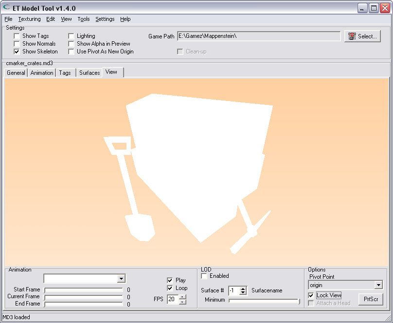
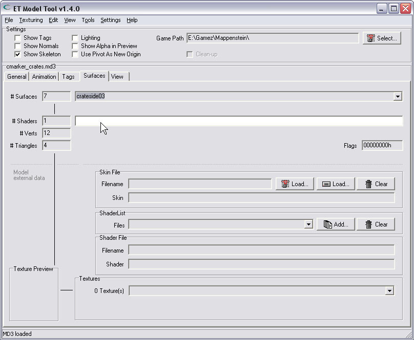

| Using a skin | |
| Some models are not textured, and they will be rendered all white.. They need to get a skin-file assigned, containing a reference to a shader for every surface in the model. (You'll notice that the shadernames of the surfaces are all empty). In-game those models need to be textured anyway, and therefor need a skin assigned in Radiant (Key:skin, Value:path/to/file.skin). This tool can embed a skin into a model. It copies the shadernames, found in the .skin-file, to each appropriate surface. The skin then becomes permanently fixed in the model, and the seperate .skin-file is no longer needed. In this example i will load a model from ET, one that needs a skin, and embed the skin into the model. | |
| Model all white | |
| As You can see, this model is drawn all white. It needs a skin.. | |
|  | |
| Surfaces without shadernames | |
| The model is rendered all white because there is no shadername to be found. Not a single texture can be found, and therefor the model is not textured at all. The result is this white object. | |
|  | |
| Loading a skin-file | |
| The skins for this model are also supplied by ET. So now i load a skin-file from the game.. | |
| Selecting a proper skin | |
| ET's construction crates have 2 skins to choose from, one for axis & one for the allies. Choose one.. Note: the skin-files for models are usually stored in the same folder as the model is in. | |
| A skin has been loaded | |
| Now that a skin-file is loaded, this tool can find the textures that go on the surfaces. On the 'Surfaces'-Tab You can see the information on the files involved; In this case: | |
| The result is a textured model. | |
| The skin that has just been loaded, makes it able (for this tool) to find all the textures it needs to render the model. However, the shadernames for all the surfaces are still empty. This means, that if You decide to save the model now, You would still have to assign a skin in Radiant. That's because the game cannot find the shadernames, and therefor no textures. Note: Loading a skin-file is just for viewing a textured model in this ET-Model-Tool. If You want the game to be able to skin the model, You can embed the skin into the model. This way the skin-data is copied into the model, so it becomes permanently fixed in the model. | |
| Embedding the skin | |
| Only after loading a skin, You are able to embed it into a model. Since we just loaded a skin for the construction-crates, we can now select the choice from the menu: "Embed skin into model..." | |
| Confirm the embed: | |
| Done | |
| The skin is now fixed in the model. As You can see on the image, the surface now has its shadername set. At this time You can save the model. When it is used in Radiant, as a misc_gamemodel or misc_model, it will not need that seperate .skin-file anymore. Nor does it need the Key/Value properties set for 'skin' in Radiant. | |